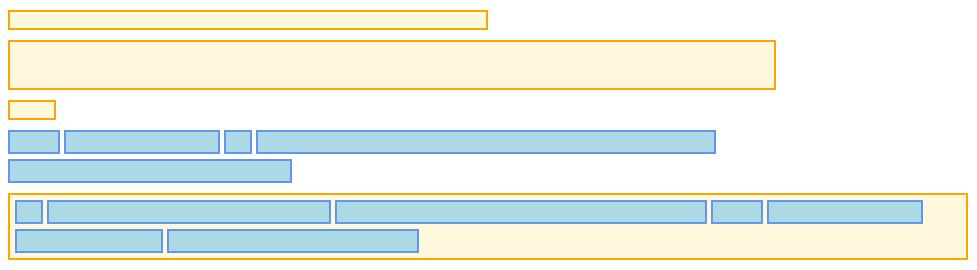

class: center, middle # Bootstrap - Layout management --- ## Summary .breadcrumbs[<a href="#1">Bootstrap - Layout management</a>] This material is part of the [Advanced Front-end Development](https://github.com/MediaComem/comem-masrad-dfa) for the [Master of Advances Studies in Rapid Application Development](https://www.he-arc.ch/ingenierie/mas-rad-cas-dar). Learn how Bootstrap helps you structure your HTML layouts, using both its grid system and all available responsive classes. **You will need** - [Google Chrome][chrome] (recommended, any browser with developer tools will do) - [Visual Studio Code][vscode] (recommended, although any editor could do) **Required reading** - [Bootstrap][bootstrap] **Recommended reading** - [Course setup][setup] <link rel="stylesheet" href="https://stackpath.bootstrapcdn.com/bootstrap/4.4.1/css/bootstrap.min.css" integrity="sha384-Vkoo8x4CGsO3+Hhxv8T/Q5PaXtkKtu6ug5TOeNV6gBiFeWPGFN9MuhOf23Q9Ifjh" crossorigin="anonymous"> <link rel="stylesheet" href="./css/cancel-bootstrap.css"> <link rel="stylesheet" href="./css/style.css"> --- class: center, middle ## Example file .breadcrumbs[<a href="#1">Bootstrap - Layout management</a>] This subject will use [this `index.html` file][bsef] as illustration. Be sure to download it, if you want to try and follow with the examples. --- ## Default HTML layout .breadcrumbs[<a href="#1">Bootstrap - Layout management</a>] The default layout of an HTML page is very simple: it's almost non-existant. Elements on the page are displayed according to their default type: - ![][block] **Block elements** (such as `<div>`, `<p>`, `<table>`) start a new "line" and are stack on one another. - ![][inline] **Inline elements** (such as `<span>`, `<a>`, `<button>`) are placed one after another in the same "line". > You can place inline elements inside block elements. **This is called the flow of the page**. <p class="center"></p> --- ### Altering the default layout .breadcrumbs[<a href="#1">Bootstrap - Layout management</a> > <a href="#4">Default HTML layout</a>] CSS offers a bunch of properties to alter this default behavior, allowing for more creative and custom page layouts. > We won't see these properties in detail in this course. - `display`: you can force an inline component to behave like a block element, and _vice-versa_, or use more diverse display rules. - `float`: you can force-push an element to either the left-side or the right-side of the page. This pull the element out of the flow. - `position`: you can force an element to a special position (_`fixed`, `absolute`, `relative`_), this can also pull it out of the flow. Using these properties can be quite tedious, especially if you want something **stable and compatible** with all browsers. --- ### Advanced CSS layout systems .breadcrumbs[<a href="#1">Bootstrap - Layout management</a> > <a href="#4">Default HTML layout</a>] With **CSS3**, new layout systems have been added to the toolkit of frontend developers, offering them **easier, consistant and more powerful** ways of placing and displaying elements on the page. **We won't see those systems here**, as it's not the purpose of the course, but if you wan't to read more about them _(which is a good idea)_, here are some resources: - CSS Grid Layout: - [CSS Tricks - A Complete Guide To Grid][grid-guide] > The CSS Grid Layout is based on the same principles used by the CSS Grid system in Bootstrap - CSS Flexbox Layout: - [Flexbox Froggy][froggy], a little game to start with Flexbox - [CSS Tricks - A Complete Guide To Flexbox][flexbox-guide] > Bootstrap has built its Grid System with Flexbox. You should read those resources in order to be more familiar with the basics principle of Flexbox, although it's not required. --- ## Grid Systems .breadcrumbs[<a href="#1">Bootstrap - Layout management</a>] .grid-50[ A Grid System is a way of creating layouts that's been inherited from graphic designers. The idea is quite simple: you divide the space at your disposal in **columns** (usually an even number), separated by a **gutter**. When you place your elements on the layout, they **must** be as wide as one or more columns. ] .grid-50[ <p><img src="images/grid-example.jpg" width="500px" /></p> ] .grid-100[ > An element mustn't stop in the **middle of a column**. That would completely defeat the purpose of having a grid system in place. > A Grid System only **constrain the width** of an element. Its height is still **calculated based on its content**. ] --- ## Bootstrap Grid System .breadcrumbs[<a href="#1">Bootstrap - Layout management</a>] Bootstrap includes a grid system that is very easy to use and very flexible. Here are some "rules" to follow for using the Grid System: - The grid is divided in **12 columns maximum**, whatever's the screen width. - You **don't have to use it everywhere** on your page. You can for example use it inside one `<div>` in particular, and completely leave it aside for the next one. - It was built having **mobile and tablet in mind**, so it offers easy **responsivness** for your layouts. To use this grid system in your layout, you have a dozen classes at your disposal. --- ### Creating rows .breadcrumbs[<a href="#1">Bootstrap - Layout management</a> > <a href="#8">Bootstrap Grid System</a>] Rows are the base of the gris system. Adding a `.row` class to an element set it up with the Bootstrap Grid System. > To have proper spacing, it's advised to use this class on elements wrapped inside elements with the `.container` or `.container-fluid` class. Let's add a row around the _Lists_ section in our `index.html` file: ```html *<div class="row"> <h2>Lists</h2> <div class="list-group"> <!-- first list --> </div> <div class="list-group"> <!-- second list --> </div> *</div> ``` > It's usually a good practice to use a new `<div>` to define a new `.row`. This helps avoiding strange behaviors regarding padding and margin. ??? You'll see that everything inside the new row is **now wider than the rest of the content**. This is because the `.row` class **cancel** the `padding` of the `.container` class. Defining the column will **solve** the _problem_. --- ### Adding columns .breadcrumbs[<a href="#1">Bootstrap - Layout management</a> > <a href="#8">Bootstrap Grid System</a>] Now that we have defined a _column container_ (i.e. the `.row` element), next step is to define the width (in number of columns) of each element in the `.row`. This is done by using a special set of classes: `.col-{column}`. > Replace `{column}` with the desired column width, between `1` and `12`. In our list example, we would like our `<h2>` title to span 12 columns... ```html <h2 `class="col-12"`>Lists</h2> ``` ... and both our lists to be half-width wide (that is span on 6 columns each): ```html *<div class="col-6"> <div class="list-group"><!-- first list --></div> *</div> *<div class="col-6"> <div class="list-group"><!-- second list --></div> *</div> ``` ??? Here, we've wrapped our `<div class="list-group">` element with another `<div>` on which we applied the `.col-6` class. That's because its padding and margin is interferring with the `padding` and `margin` of the `.list-group` class. > Generally, it's a good practice to add a new `<div>` element to define columns. --- #### Column wrapping .breadcrumbs[<a href="#1">Bootstrap - Layout management</a> > <a href="#8">Bootstrap Grid System</a> > <a href="#10">Adding columns</a>] If you look closely at the previous example, you might see something apparently odd. We have an `<h2>` that's **12 columns wide** and two `<div>` that are **both 6 columns wide**. That makes up a total of **24 columns** for the row. > Didn't you say that a `.row` has a maximum of 12 columns?! Indeed. But when the number of columns in a row is **more than 12**, Bootstrap will **wrap all elements** causing the excess on a **new 12-columns-wide line**. > This is very useful! With this behavior, you **don't have to constantly calculate** the number of columns in a row. > Just define **one** row, and add **as many columns as you want**; they will be properly placed and spaced. <div class="live-example shadow"> <div class="example-wrapper"> <div class="row"> <div class="col-6"> <div class="example-column"><code>.col-6</code></div> </div> <div class="col-3"> <div class="example-column"><code>.col-3</code></div> </div> <div class="col-2"> <div class="example-column"><code>.col-2</code></div> </div> <div class="col-4"> <div class="example-column"><code>.col-4</code></div> </div> <div class="col-5"> <div class="example-column"><code>.col-5</code></div> </div> <div class="col-10"> <div class="example-column"><code>.col-10</code></div> </div> </div> </div> </div> --- #### Offseting columns .breadcrumbs[<a href="#1">Bootstrap - Layout management</a> > <a href="#8">Bootstrap Grid System</a> > <a href="#10">Adding columns</a>] Another grid functionnality offered by the Bootstrap Grid System is **offsetting columns**. Let's say that we want the _Forms_ section and the _Buttons_ section of the `index.html` to be **on the same row**, with both a **5-columns width**, but the former **aligned to the left**, and the latter **aligned to the right**. We would need to offset our _Color classes_ section by **2 columns** to achieve that (so that the total adds up to 12 columns). This can be achieved with another set of classes named `.offset-{column}`: > Again, replace `{column}` with the desired number of columns ```html <div class="row"> <div class="col-5"> <h2>Buttons</h2> <div><!-- Buttons content --></div> </div> <div class="col-5 `offset-2`"> <h2>Color classes</h2> <div><!-- Color classes content --></div> </div> </div> ``` --- ### Responsivness .breadcrumbs[<a href="#1">Bootstrap - Layout management</a> > <a href="#8">Bootstrap Grid System</a>] As said before, Bootstrap was build **with smartphones and tablets in mind**, and this is especially visible with the Grid System. Until now, we have only used the `.col-{column}` set of classes to position our element on the grid. But there is actually **4 additional sets of classes available**, each of them being applied when the user's screen (or window) has a **certain width**: | Classe name | Min Screen width | | :------------------ | :--------------- | | `.col-sm-{column}` | 576px | | `.col-md-{column}` | 768px | | `.col-lg-{column}` | 992px | | `.col-xl-{column}` | 1200px | > Using these classes you can dramatically alter the layout of your page, depending on the width of the screen it's rendered on. > You can also use those screen size names to offset columns: `.offset-sm-{column}`, `.offset-md-{column}`, `.offset-lg-{column}`, `.offset-xl-{column}`. --- #### Example .breadcrumbs[<a href="#1">Bootstrap - Layout management</a> > <a href="#8">Bootstrap Grid System</a> > <a href="#13">Responsivness</a>] To see by ourselves how this works, let's modify the `<p>`s in the _Color classes_ section. Add these classes in the `class` attribute of all the `<p>`: ```html <p class="... `col-6 col-sm-4 col-md-3 col-lg-2`"><!-- content --></p> ``` **What does this mean?** - `.col-6` The content will be 6-column-wide by default - `.col-sm-4` The content will be 4-column-wide on small screens - `.col-md-3` The content will be 3-column-wide on middle screens - `.col-lg-2` The content will be 2-column-wide on large screens > Go ahead. Try to resize your browser (using the Developer Tools of Chrome) and see how the content behave. --- #### What if..? .breadcrumbs[<a href="#1">Bootstrap - Layout management</a> > <a href="#8">Bootstrap Grid System</a> > <a href="#13">Responsivness</a>] What if you want your `<p>`s to be **3-column-wide** for every screen width, except on **extra-small ones**, where they should be **6-column-wide**? Maybe you would do something like this: ```html <p class="... `col-6 col-sm-3 col-md-3 col-lg-3 col-xl-3`"><!-- content --></p> ``` > You can see that we have a lot of redundancy: `col-xl-3`, `.col-lg-3`, `.col-md-3` and `.col-sm-3` all do basically the same thing. Good news is: we can get rid of this redundancy. > Each screen-dependant class is applied when the screen has the expected width **or is wider** (_unless you defined otherwise_). In this case, doing this would have the same result: ```html <p class="... `col-6 col-sm-3`"><!-- content --></p> ``` > Since we didn't define any behavior for `xl`, `lg` and `md` screen, Bootstrap will fallback to the closest one, which is `.col-sm-3`. --- #### Flexibility .breadcrumbs[<a href="#1">Bootstrap - Layout management</a> > <a href="#8">Bootstrap Grid System</a> > <a href="#13">Responsivness</a>] You don't have to use all the classes **each time** you want to define how your element should behave. - By default, any component inside a `.row` but **without column class** for the current screen-width will be **12-column-wide**. - If you define only **one class**, say a `.col-sm-5`, the element will be **`5`-column-wide** for **small screens and wider**, and **12-column-wide** for all **smaller screens**. - If you defined only **two classes**, say a `.col-sm-5` and a `.col-lg-2`, the element will be : - 12-column-wide for screens below `sm` width - 5-column-wide for `sm` and `md` screens - 2-column-wide for `lg` and `xl` screens > Understanding all these behaviors will greatly help you build your layouts. --- ### Responsive utilities .breadcrumbs[<a href="#1">Bootstrap - Layout management</a> > <a href="#8">Bootstrap Grid System</a>] Finally, you have the ability to alter the display of any HTML element based on the screen-width. This can be done with the `.d-{width}-{value}` utility set. - Replace `{width}` with one of the available screen sizes (`sm`, `md`, `lg` or `xl`) > Remove it for a class that applies regardless of the screen size - Replace `{value}` with the type of display to apply to the element for the specified screen size. _For example: `none` to hide the element, `inline` to display it inline or `block` to display it as a block._ > See [the documentation][d-values] for the complete list of display values Let's say we want our _Tables_ section to be displayed as a `block` on `sm` and wider screens, and not displayed at all for smaller screens: ```html <div class="`d-none d-sm-block`"> <h2>Tables</h2> <table class="table table-striped table-bordered table-hover"> <!-- Table content --> </table> </div> ``` --- ## Resources .breadcrumbs[<a href="#1">Bootstrap - Layout management</a>] You will find the final HTML file for this course [here][fef] **Documentation** - [Grid System][gs] - [Responsive utilities][ru] [flexbox-guide]: https://css-tricks.com/snippets/css/a-guide-to-flexbox/ [grid-guide]: https://css-tricks.com/snippets/css/complete-guide-grid/ [froggy]: https://flexboxfroggy.com/#fr [bootstrap]: ../bootstrap [setup]: ../setup [chrome]: https://www.google.com/chrome/ [vscode]: https://code.visualstudio.com/ [bsef]: https://gist.githubusercontent.com/Tazaf/18732ef01164f7b6348443c4c4748f42/raw/index.html [block]: ./images/blocks.jpg [inline]: ./images/inline.jpg [gs]: https://getbootstrap.com/docs/4.4/layout/grid/ [ru]: https://getbootstrap.com/docs/4.4/layout/utilities-for-layout/ [fef]: https://gist.githubusercontent.com/Tazaf/329374f10e54818875620c9e03a2609a/raw/index.html [bs-screen-sizes]: https://getbootstrap.com/docs/4.3/layout/grid/#grid-options [d-values]: https://getbootstrap.com/docs/4.3/utilities/display/#notation